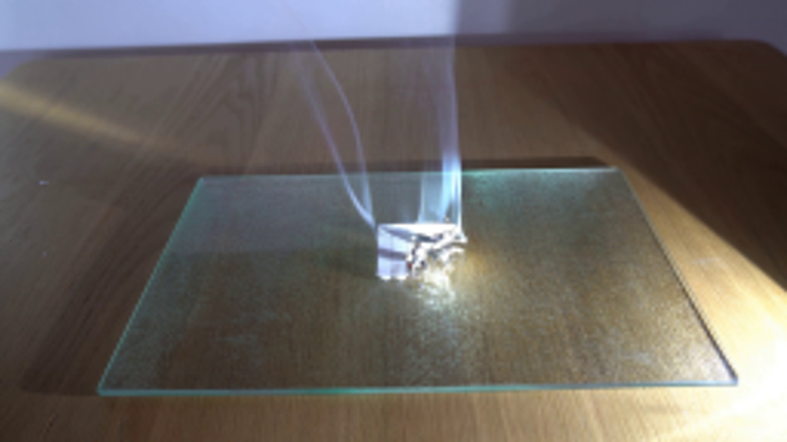
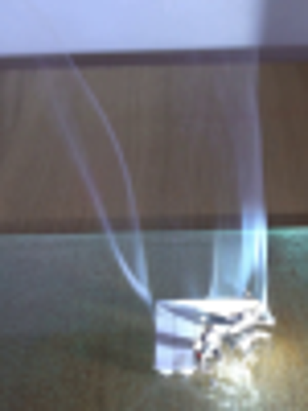
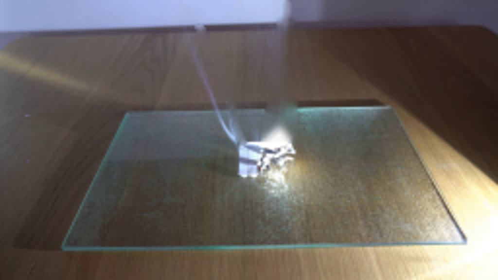
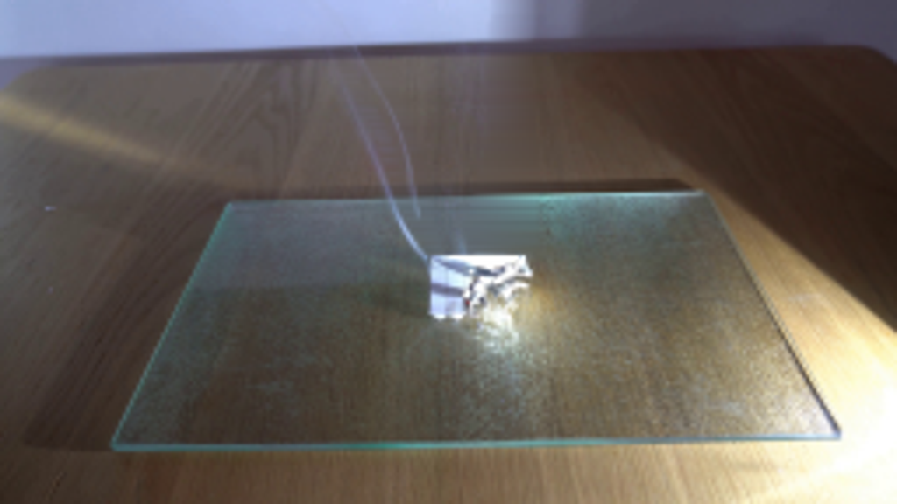
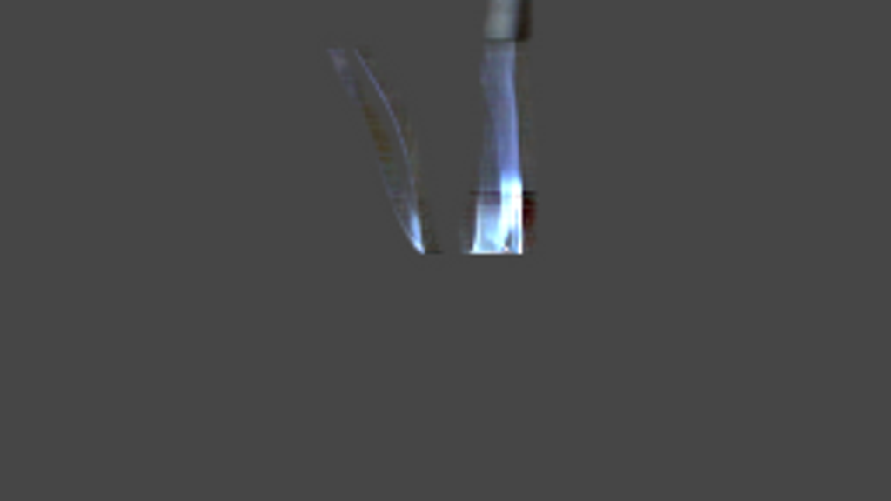
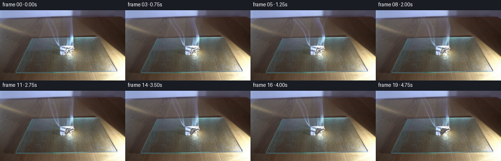
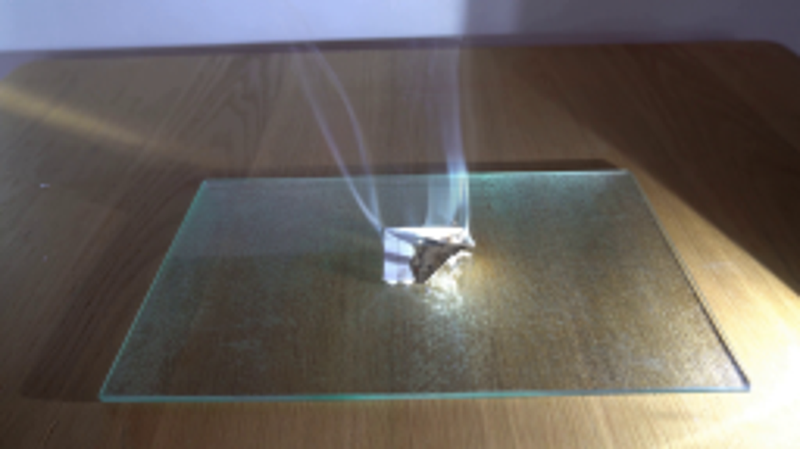
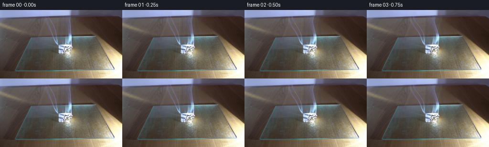

CODING AGENTS AS PIXEL WORLD MODELS
traex/GPT-6.1-Sol · 0140
点击播放 · 原生 RGB 像素
逐轮保存的候选
回放视频、检查图与代码变化。
每份候选均可单独播放。实际图片检查记录在下方工具轨迹中。
候选 01播放与检查图
点击播放 · 原生 RGB 像素

展开代码变化
--- 上一保存版本
+++ 本次保存版本
@@ -0,0 +1,154 @@
+from pathlib import Path
+import math
+import numpy as np
+import cv2
+from PIL import Image,ImageDraw
+from scipy.ndimage import gaussian_filter
+import artifact_io
+
+ROOT=Path(__file__).resolve().parent
+W,H=256,144
+image=np.asarray(Image.open(ROOT/'first_frame.png').convert('RGB')).astype(np.float32)
+Y,X=np.mgrid[:H,:W].astype(np.float32)
+
+# Separate the translucent wisps from the unchanging camera plate, following
+# their actual silhouettes in the supplied photograph.
+mi=Image.new('L',(W,H));d=ImageDraw.Draw(mi)
+d.line([(94,12),(96,20),(98,25),(100,30),(102.5,35),(104.5,40),(106.5,45),(108.5,50),(110.5,55),(112.5,60),(115,65),(118.5,70),(122,73)],255,5)
+d.line([(101,12),(105,20),(108,25),(111,30),(113,35),(115,40),(116,45),(117,50),(118,55),(118.5,60),(119,65),(121,70),(122,73)],255,5)
+d.polygon([(140,13),(151,13),(152,43),(153,70),(149,72),(132,72),(133,62),(136,50),(138,37),(138,23)],fill=255)
+# Smoke over the wall is faint, and that part of the plate has a genuine
+# illumination boundary which is kept intact.
+mask=cv2.GaussianBlur(np.asarray(mi,dtype=np.float32)/255,(0,0),.65)
+mask[Y>=73]=0
+background=image.copy()
+for y in range(13,73):
+ ids=np.flatnonzero(mask[y]>.01)
+ if not len(ids):continue
+ cuts=np.r_[0,np.where(np.diff(ids)>1)[0]+1,len(ids)]
+ for i,j in zip(cuts[:-1],cuts[1:]):
+ l,r=ids[i],ids[j-1]
+ left=np.median(image[y,max(0,l-4):l],axis=0)
+ right=np.median(image[y,r+1:r+5],axis=0)
+ for x in range(l,r+1):
+ a=(x-l+1)/(r-l+2)
+ background[y,x]=(left*(1-a)+right*a)*mask[y,x]+image[y,x]*(1-mask[y,x])
+residual=image-background
+# Avoid transporting the dark corners of an estimated background into clear air.
+residual=np.maximum(residual,0)
+# Keep first image exact, but suppress background reconstruction artefacts later.
+
+S=3
+ys,xs=np.mgrid[:H*S,:W*S].astype(np.float32)/S
+height=np.maximum(0,73-ys)
+rng=np.random.default_rng(20)
+
+# Source geometry for the two thin edge streams and the wider main plume.
+keyy=np.array([0,13,20,25,30,35,40,45,50,55,60,65,70,73],np.float32)
+keys=[np.array([88,94,96,98,100,102.5,104.5,106.5,108.5,110.5,112.5,115,118.5,123]),
+ np.array([95,101,105,108,111,113,115,116,117,118,118.5,119,121,123]),
+ np.array([146,146,146,146,146,146,147,147,147,146,145,143,143,144])]
+initial_curves=[np.interp(ys,keyy,k) for k in keys]
+
+# Deterministic spatial texture used for a gradual, connected char front.
+tex=gaussian_filter(rng.normal(size=(H,W)),.6)
+tex2=gaussian_filter(rng.normal(size=(H,W)),1.1)
+paper_im=Image.new('L',(W,H));pd=ImageDraw.Draw(paper_im)
+pd.polygon([(123,74),(127,74),(135,77),(145,75),(150,78),(143,82),(139,86),(135,90),(123,90)],fill=255)
+paper_mask=gaussian_filter(np.asarray(paper_im,np.float32)/255,.38)
+
+
+def procedural_smoke(t):
+ density=np.zeros((H*S,W*S),np.float32)
+ # Buoyant travelling disturbances: the phase is delayed with height so
+ # bends are carried upward rather than flickering independently.
+ for j,c in enumerate(initial_curves):
+ delay=height/(28+7*j)
+ ramp=(height/73)**.8
+ sway=ramp*(4.1*np.sin(1.5*t-delay*1.5+.8*j)+2.4*np.sin(2.7*t-delay*2.7+1.4*j))
+ # At t=0, match the photographed streams before they drift.
+ sway-=ramp*(4.1*np.sin(-delay*1.5+.8*j)+2.4*np.sin(-delay*2.7+1.4*j))*np.exp(-t*.6)
+ center=c+sway
+ if j<2:
+ width=.44+.22*(height/73)+.13*np.sin(1.9*t-height/9+j)
+ strength=(.055+.18*np.exp(-height/12))*(.8+.2*np.sin(2.3*t-height/9+j))
+ density+=strength*np.exp(-.5*((xs-center)/width)**2)
+ density+=.013*np.exp(-.5*((xs-center-1.1)/1.3)**2)
+ else:
+ width=1.4+height*.045+.7*np.sin(t*1.8-height/14)**2
+ strength=.055+.065*np.exp(-((height-13)/14)**2)
+ modulation=.76+.24*np.sin(t*3.1-height/5)
+ density+=strength*modulation*np.exp(-.5*((xs-center)/width)**2)
+ # A bright curling edge catching the same cool sidelight.
+ edge=center+width*(.6+.4*np.sin(t*2.0-height/9))
+ density+=.042*np.exp(-.5*((xs-edge)/(.55+height*.009))**2)
+ # Additional white smoke rolls from the glowing right crease, expanding
+ # and dissipating as it rises. Continuous emission avoids discrete blobs.
+ for k in range(44):
+ born=-3.5+k*.19
+ age=t-born
+ if age<=0 or age>4.2:continue
+ z=24*age+2.5*age**1.4
+ if z>105:continue
+ cx=142+3.2*np.sin(born*1.3)+1.5*age*np.sin(1.8*born+age)+.85*age
+ cy=73-z
+ sx=1.4+1.5*age
+ sy=1.1+1.15*age
+ opacity=.014*(1-math.exp(-age*7))*math.exp(-age*.4)
+ opacity*=1-math.exp(-max(t,0)*.9)
+ density+=opacity*np.exp(-.5*(((xs-cx)/sx)**2+((ys-cy)/sy)**2))
+ density*=1/(1+np.exp(np.clip((ys-73)*4,-50,50)))
+ return cv2.resize(density,(W,H),interpolation=cv2.INTER_AREA)
+
+
+def frame(t):
+ # Gradual movement of the photographed smoke, retaining its detailed
+ # natural highlights. The foot remains anchored to the burning fold.
+ z=np.clip(73-Y,0,90)
+ ramp=np.clip(z/73,0,1)**.9
+ dx=ramp*(4*np.sin(1.6*t-z/17)+2.8*np.sin(2.7*t-z/11)-
+ np.exp(-t*.6)*(4*np.sin(-z/17)+2.8*np.sin(-z/11)))
+ dy=ramp*(1.6*np.sin(2*t-z/8))
+ r=cv2.remap(residual,(X-dx).astype('float32'),(Y-dy).astype('float32'),cv2.INTER_CUBIC,borderMode=cv2.BORDER_CONSTANT)
+ intensity=1+.13*np.sin(4.2*t-z/5)+.1*np.sin(6.3*t-z/7)
+ fade=.7+.3*np.exp(-t*.7)
+ result=background+np.maximum(r,0)*intensity[...,None]*fade
+ # Fresh smoke gradually replaces the initial photographed plume.
+ a=procedural_smoke(t)*(1-np.exp(-t*1.5))
+ tint=np.zeros_like(result)+np.array([219,231,247],np.float32)
+ result=result*(1-a[...,None])+tint*a[...,None]
+
+ # Slow surface oxidation spreading from the already blackened crease.
+ progress=t/4.75
+ front=134.4-3.2*progress+1.05*np.sin((Y-78)*.69)+.55*tex2
+ char=np.clip((X-front+.45)*.8,0,1)*paper_mask
+ char*=np.clip((Y-77)/2,0,1)*progress*.71
+ ash=np.stack([60+tex*11,55+tex*10,51+tex*9],axis=-1)
+ result=result*(1-char[...,None])+ash*char[...,None]
+ # Darkening of the upper edge where the flame travels, leaving the large
+ # folded white face recognizable throughout the short demonstration.
+ crease=np.exp(-((Y-(77.3+.16*(X-139))) / .75)**2)*np.exp(-((X-141)/7)**2)
+ crease*=progress*.5
+ result=result*(1-crease[...,None])+np.array([68,62,56])*crease[...,None]
+
+ # A small, unsteady pale flame at the burning corner, translucent in the
+ # strong daylight. It is attached to the paper, never to the smoke above.
+ f=math.sin(t*13.7)*.5+math.sin(t*8.6+.7)*.32
+ fh=4.0+1.5*f
+ fy=78.3-ys
+ center=143.6+.65*np.sin(t*7.2)*np.clip(fy/fh,0,1)
+ fw=np.maximum(.18,.95*(1-np.maximum(0,fy)/max(1,fh)))
+ flame=np.exp(-.5*((xs-center)/fw)**2)*np.clip(fy/.8,0,1)*np.clip((fh-fy)/.8,0,1)
+ flame=cv2.resize(flame,(W,H),interpolation=cv2.INTER_AREA)*(.32+.1*np.sin(t*11))
+ flame*=1-np.exp(-t*2)
+ result=result*(1-flame[...,None])+np.array([255,219,154])*flame[...,None]
+ # Warm light and an ember on the crease, restricted to the existing burn.
+ glow=np.exp(-.5*(((X-140)/2.0)**2+((Y-82)/2.2)**2))
+ g=(.5+.5*np.sin(t*12.5))*(1-np.exp(-t*2))
+ result+=glow[...,None]*np.array([14,4,-3])*g
+ return np.clip(result,0,255).astype(np.uint8)
+
+frames=np.empty((20,H,W,3),np.uint8)
+frames[0]=image.astype(np.uint8)
+for i in range(1,20):frames[i]=frame(i/4)
+artifact_io.save(frames,ROOT)
候选 02播放与检查图
点击播放 · 原生 RGB 像素

展开代码变化
--- 上一保存版本
+++ 本次保存版本
@@ -94,7 +94,7 @@
cy=73-z
sx=1.4+1.5*age
sy=1.1+1.15*age
- opacity=.014*(1-math.exp(-age*7))*math.exp(-age*.4)
+ opacity=.032*(1-math.exp(-age*7))*math.exp(-age*.4)
opacity*=1-math.exp(-max(t,0)*.9)
density+=opacity*np.exp(-.5*(((xs-cx)/sx)**2+((ys-cy)/sy)**2))
density*=1/(1+np.exp(np.clip((ys-73)*4,-50,50)))
@@ -111,7 +111,7 @@
dy=ramp*(1.6*np.sin(2*t-z/8))
r=cv2.remap(residual,(X-dx).astype('float32'),(Y-dy).astype('float32'),cv2.INTER_CUBIC,borderMode=cv2.BORDER_CONSTANT)
intensity=1+.13*np.sin(4.2*t-z/5)+.1*np.sin(6.3*t-z/7)
- fade=.7+.3*np.exp(-t*.7)
+ fade=.53+.47*np.exp(-t*.7)
result=background+np.maximum(r,0)*intensity[...,None]*fade
# Fresh smoke gradually replaces the initial photographed plume.
a=procedural_smoke(t)*(1-np.exp(-t*1.5))
候选 03播放与检查图
可观测工具轨迹
实际执行的命令与返回图片。
命令 1exit 0
/bin/bash -lc 'ls -la && cat prompt.txt && cat GENERATION_RULES.md'
命令 2exit 0
/bin/bash -lc "cat artifact_io.py && python - <<'PY'
from PIL import Image
im=Image.open('first_frame.png');print(im.size);im.resize((1024,576)).save('.tmp/large.png')
PY"命令 3exit 0
/bin/bash -lc "python - <<'PY'
import importlib.util
for a in ['numpy','scipy','cv2','PIL']:
print(a, bool(importlib.util.find_spec(a)))
from PIL import Image
im=Image.open('first_frame.png');im.crop((85,0,160,100)).resize((450,600)).save('.tmp/crop.png')
PY"命令 4exit 0
/bin/bash -lc "python - <<'PY'
from PIL import Image
import numpy as np
im=np.asarray(Image.open('first_frame.png'))
for y in [0,10,15,20,30,40,50,55,60,65,70,73,76,80,85,90]:
print('y',y,' '.join(f'{x}:{tuple(im[y,x])}' for x in range(130,160,3)))
PY"命令 5exit 0
/bin/bash -lc "cat > .tmp/test_bg.py <<'PY'
import numpy as np,cv2
from PIL import Image,ImageDraw,ImageFilter
im=np.asarray(Image.open('first_frame.png'))
mask=Image.new('L',(256,144));d=ImageDraw.Draw(mask)
d.line([(101,12),(104,19),(110,29),(115,41),(118,54),(120,63),(124,73)],fill=255,width=4)
d.line([(103,14),(110,25),(116,33),(118,43),(120,56),(122,66),(124,73)],fill=255,width=3)
d.polygon([(143,0),(151,0),(150,22),(152,46),(152,70),(149,73),(134,72),(135,62),(138,48),(140,34),(141,20)],fill=255)
m=np.array(mask)
bg=cv2.inpaint(im,m,6,cv2.INPAINT_TELEA)
Image.fromarray(bg).resize((1024,576)).save('.tmp/bg.png')
Image.fromarray(np.clip((im.astype(float)-bg.astype(float))*3+80,0,255).astype('uint8')).resize((1024,576)).save('.tmp/extracted.png')
mask.save('.tmp/smoke_mask.png')
PY
python .tmp/test_bg.py"命令 6exit 0
/bin/bash -lc "python - <<'PY'
from PIL import Image
im=Image.open('first_frame.png');im.crop((90,10,161,74)).resize((710,640)).save('.tmp/upper.png')
PY"命令 7exit 0
/bin/bash -lc "cat > .tmp/test_bg2.py <<'PY'
import numpy as np, cv2
from PIL import Image,ImageDraw
im=np.asarray(Image.open('first_frame.png')).astype(float)
h,w=im.shape[:2]; Y,X=np.mgrid[:h,:w]
maskim=Image.new('L',(w,h));d=ImageDraw.Draw(maskim)
d.line([(95,12),(98,20),(103,28),(108,37),(112,50),(116,61),(121,70),(124,73)],fill=255,width=4)
d.line([(103,13),(108,22),(114,32),(118,44),(120,56),(122,66),(124,73)],fill=255,width=4)
d.polygon([(140,0),(152,0),(151,21),(153,44),(153,71),(149,73),(133,72),(132,64),(135,55),(139,38),(138,22)],fill=255)
mask=np.asarray(maskim).astype(float)/255
# feather by 1 pixel
mask=cv2.GaussianBlur(mask.astype('float32'),(0,0),.7)
bg=im.copy()
# fill row wise using clear pixels beside each segment
a=(mask>.01)
for y in range(73):
inds=np.flatnonzero(a[y])
if not len(inds):continue
cuts=np.r_[0,np.where(np.diff(inds)>1)[0]+1,len(inds)]
for i,j in zip(cuts[:-1],cuts[1:]):
l,r=inds[i],inds[j-1]
left=np.median(im[y,max(l-4,0):l],axis=0)
right=np.median(im[y,r+1:r+5],axis=0)
for x in range(l,r+1):
f=(x-l+1)/(r-l+2)
bg[y,x]=left*(1-f)+right*f
bg=bg*mask[...,None]+im*(1-mask[...,None])
Image.fromarray(np.uint8(bg)).resize((1024,576)).save('.tmp/bg2.png')
np.save('.tmp/bg.npy',bg)
Image.fromarray(np.clip((im-bg)*2+70,0,255).astype('uint8')).resize((1024,576)).save('.tmp/extracted2.png')
PY
python .tmp/test_bg2.py"命令 8exit 0
/bin/bash -lc "python - <<'PY'
import numpy as np
from PIL import Image
im=np.asarray(Image.open('first_frame.png')).astype(float)
for y in [10,15,20,25,30,35,40,45,50,55,60,65,70]:
# bluish local contrast
a=im[y,:,2]-.5*(im[y,:,0]+im[y,:,1]);
print(y, sorted([(x,round(a[x],1)) for x in range(90,127)],key=lambda v:-v[1])[:10])
PY"命令 9exit 0
/bin/bash -lc "cat > generate.py <<'PY'
from pathlib import Path
import math
import numpy as np
import cv2
from PIL import Image,ImageDraw
from scipy.ndimage import gaussian_filter
import artifact_io
ROOT=Path(__file__).resolve().parent
W,H=256,144
image=np.asarray(Image.open(ROOT/'first_frame.png').convert('RGB')).astype(np.float32)
Y,X=np.mgrid[:H,:W].astype(np.float32)
# Separate the translucent wisps from the unchanging camera plate, following
# their actual silhouettes in the supplied photograph.
mi=Image.new('L',(W,H));d=ImageDraw.Draw(mi)
d.line([(94,12),(96,20),(98,25),(100,30),(102.5,35),(104.5,40),(106.5,45),(108.5,50),(110.5,55),(112.5,60),(115,65),(118.5,70),(122,73)],255,5)
d.line([(101,12),(105,20),(108,25),(111,30),(113,35),(115,40),(116,45),(117,50),(118,55),(118.5,60),(119,65),(121,70),(122,73)],255,5)
d.polygon([(140,13),(151,13),(152,43),(153,70),(149,72),(132,72),(133,62),(136,50),(138,37),(138,23)],fill=255)
# Smoke over the wall is faint, and that part of the plate has a genuine
# illumination boundary which is kept intact.
mask=cv2.GaussianBlur(np.asarray(mi,dtype=np.float32)/255,(0,0),.65)
mask[Y>=73]=0
background=image.copy()
for y in range(13,73):
ids=np.flatnonzero(mask[y]>.01)
if not len(ids):continue
cuts=np.r_[0,np.where(np.diff(ids)>1)[0]+1,len(ids)]
for i,j in zip(cuts[:-1],cuts[1:]):
l,r=ids[i],ids[j-1]
left=np.median(image[y,max(0,l-4):l],axis=0)
right=np.median(image[y,r+1:r+5],axis=0)
for x in range(l,r+1):
a=(x-l+1)/(r-l+2)
background[y,x]=(left*(1-a)+right*a)*mask[y,x]+image[y,x]*(1-mask[y,x])
residual=image-background
# Avoid transporting the dark corners of an estimated background into clear air.
residual=np.maximum(residual,0)
# Keep first image exact, but suppress background reconstruction artefacts later.
S=3
ys,xs=np.mgrid[:H*S,:W*S].astype(np.float32)/S
height=np.maximum(0,73-ys)
rng=np.random.default_rng(20)
# Source geometry for the two thin edge streams and the wider main plume.
keyy=np.array([0,13,20,25,30,35,40,45,50,55,60,65,70,73],np.float32)
keys=[np.array([88,94,96,98,100,102.5,104.5,106.5,108.5,110.5,112.5,115,118.5,123]),
np.array([95,101,105,108,111,113,115,116,117,118,118.5,119,121,123]),
np.array([146,146,146,146,146,146,147,147,147,146,145,143,143,144])]
initial_curves=[np.interp(ys,keyy,k) for k in keys]
# Deterministic spatial texture used for a gradual, connected char front.
tex=gaussian_filter(rng.normal(size=(H,W)),.6)
tex2=gaussian_filter(rng.normal(size=(H,W)),1.1)
paper_im=Image.new('L',(W,H));pd=ImageDraw.Draw(paper_im)
pd.polygon([(123,74),(127,74),(135,77),(145,75),(150,78),(143,82),(139,86),(135,90),(123,90)],fill=255)
paper_mask=gaussian_filter(np.asarray(paper_im,np.float32)/255,.38)
def procedural_smoke(t):
density=np.zeros((H*S,W*S),np.float32)
# Buoyant travelling disturbances: the phase is delayed with height so
# bends are carried upward rather than flickering independently.
for j,c in enumerate(initial_curves):
delay=height/(28+7*j)
ramp=(height/73)**.8
sway=ramp*(4.1*np.sin(1.5*t-delay*1.5+.8*j)+2.4*np.sin(2.7*t-delay*2.7+1.4*j))
# At t=0, match the photographed streams before they drift.
sway-=ramp*(4.1*np.sin(-delay*1.5+.8*j)+2.4*np.sin(-delay*2.7+1.4*j))*np.exp(-t*.6)
center=c+sway
if j<2:
width=.44+.22*(height/73)+.13*np.sin(1.9*t-height/9+j)
strength=(.055+.18*np.exp(-height/12))*(.8+.2*np.sin(2.3*t-height/9+j))
density+=strength*np.exp(-.5*((xs-center)/width)**2)
density+=.013*np.exp(-.5*((xs-center-1.1)/1.3)**2)
else:
width=1.4+height*.045+.7*np.sin(t*1.8-height/14)**2
strength=.055+.065*np.exp(-((height-13)/14)**2)
modulation=.76+.24*np.sin(t*3.1-height/5)
density+=strength*modulation*np.exp(-.5*((xs-center)/width)**2)
# A bright curling edge catching the same cool sidelight.
edge=center+width*(.6+.4*np.sin(t*2.0-height/9))
density+=.042*np.exp(-.5*((xs-edge)/(.55+height*.009))**2)
# Additional white smoke rolls from the glowing right crease, expanding
# and dissipating as it rises. Continuous emission avoids discrete blobs.
for k in range(44):
born=-3.5+k*.19
age=t-born
if age<=0 or age>4.2:continue
z=24*age+2.5*age**1.4
if z>105:continue
cx=142+3.2*np.sin(born*1.3)+1.5*age*np.sin(1.8*born+age)+.85*age
cy=73-z
sx=1.4+1.5*age
sy=1.1+1.15*age
opacity=.014*(1-math.exp(-age*7))*math.exp(-age*.4)
opacity*=1-math.exp(-max(t,0)*.9)
density+=opacity*np.exp(-.5*(((xs-cx)/sx)**2+((ys-cy)/sy)**2))
density*=1/(1+np.exp(np.clip((ys-73)*4,-50,50)))
return cv2.resize(density,(W,H),interpolation=cv2.INTER_AREA)
def frame(t):
# Gradual movement of the photographed smoke, retaining its detailed
# natural highlights. The foot remains anchored to the burning fold.
z=np.clip(73-Y,0,90)
ramp=np.clip(z/73,0,1)**.9
dx=ramp*(4*np.sin(1.6*t-z/17)+2.8*np.sin(2.7*t-z/11)-
np.exp(-t*.6)*(4*np.sin(-z/17)+2.8*np.sin(-z/11)))
dy=ramp*(1.6*np.sin(2*t-z/8))
r=cv2.remap(residual,(X-dx).astype('float32'),(Y-dy).astype('float32'),cv2.INTER_CUBIC,borderMode=cv2.BORDER_CONSTANT)
intensity=1+.13*np.sin(4.2*t-z/5)+.1*np.sin(6.3*t-z/7)
fade=.7+.3*np.exp(-t*.7)
result=background+np.maximum(r,0)*intensity[...,None]*fade
# Fresh smoke gradually replaces the initial photographed plume.
a=procedural_smoke(t)*(1-np.exp(-t*1.5))
tint=np.zeros_like(result)+np.array([219,231,247],np.float32)
result=result*(1-a[...,None])+tint*a[...,None]
# Slow surface oxidation spreading from the already blackened crease.
progress=t/4.75
front=134.4-3.2*progress+1.05*np.sin((Y-78)*.69)+.55*tex2
char=np.clip((X-front+.45)*.8,0,1)*paper_mask
char*=np.clip((Y-77)/2,0,1)*progress*.71
ash=np.stack([60+tex*11,55+tex*10,51+tex*9],axis=-1)
result=result*(1-char[...,None])+ash*char[...,None]
# Darkening of the upper edge where the flame travels, leaving the large
# folded white face recognizable throughout the short demonstration.
crease=np.exp(-((Y-(77.3+.16*(X-139))) / .75)**2)*np.exp(-((X-141)/7)**2)
crease*=progress*.5
result=result*(1-crease[...,None])+np.array([68,62,56])*crease[...,None]
# A small, unsteady pale flame at the burning corner, translucent in the
# strong daylight. It is attached to the paper, never to the smoke above.
f=math.sin(t*13.7)*.5+math.sin(t*8.6+.7)*.32
fh=4.0+1.5*f
fy=78.3-ys
center=143.6+.65*np.sin(t*7.2)*np.clip(fy/fh,0,1)
fw=np.maximum(.18,.95*(1-np.maximum(0,fy)/max(1,fh)))
flame=np.exp(-.5*((xs-center)/fw)**2)*np.clip(fy/.8,0,1)*np.clip((fh-fy)/.8,0,1)
flame=cv2.resize(flame,(W,H),interpolation=cv2.INTER_AREA)*(.32+.1*np.sin(t*11))
flame*=1-np.exp(-t*2)
result=result*(1-flame[...,None])+np.array([255,219,154])*flame[...,None]
# Warm light and an ember on the crease, restricted to the existing burn.
glow=np.exp(-.5*(((X-140)/2.0)**2+((Y-82)/2.2)**2))
g=(.5+.5*np.sin(t*12.5))*(1-np.exp(-t*2))
result+=glow[...,None]*np.array([14,4,-3])*g
return np.clip(result,0,255).astype(np.uint8)
frames=np.empty((20,H,W,3),np.uint8)
frames[0]=image.astype(np.uint8)
for i in range(1,20):frames[i]=frame(i/4)
artifact_io.save(frames,ROOT)
PY
python generate.py"命令 10exit 0
/bin/bash -lc "python - <<'PY'
from PIL import Image
Image.open('frames/19.png').resize((1024,576)).save('.tmp/last.png')
PY"命令 11exit 1
/bin/bash -lc "python - <<'PY'
p='generate.py'
s=open(p).read().replace('fade=.7+.3*np.exp(-t*.7)','fade=.53+.47*np.exp(-t*.7)').replace('opacity=.014*(1-math.exp(-age*7))*math.exp(-age*.4)','opacity=.032*(1-math.exp(-age*7))*math.exp(-age*.4)')
open(p,'w').write(s)
PY
python generate.py
command -v ffmpeg"命令 12exit 0
/bin/bash -lc "python - <<'PY'
from pathlib import Path
import numpy as np
from PIL import Image
fs=np.stack([np.asarray(Image.open(f'frames/{i:02d}.png')) for i in range(20)])
assert fs.shape==(20,144,256,3)
assert fs.dtype==np.uint8
assert np.array_equal(fs[0],np.asarray(Image.open('first_frame.png')))
z=np.load('pixels.npz')['pixels'];assert z.shape==(144,256,20)
print('Validated: 20 RGB frames, 256x144, first frame exact.')
print('Artifacts:', ', '.join(p.name for p in [Path('generate.py'),Path('pixels.npz'),Path('index.html'),Path('inspection.png')]))
PY"视觉工具实际返回图片 1

视觉工具实际返回图片 2

视觉工具实际返回图片 3

视觉工具实际返回图片 4
视觉工具实际返回图片 5

视觉工具实际返回图片 6

视觉工具实际返回图片 7

视觉工具实际返回图片 8

视觉工具实际返回图片 9

视觉工具实际返回图片 10

保存候选 3 份；完成命令 12 次；可验证图片返回 10 张。原始 API 响应与完整日志保留在本地。